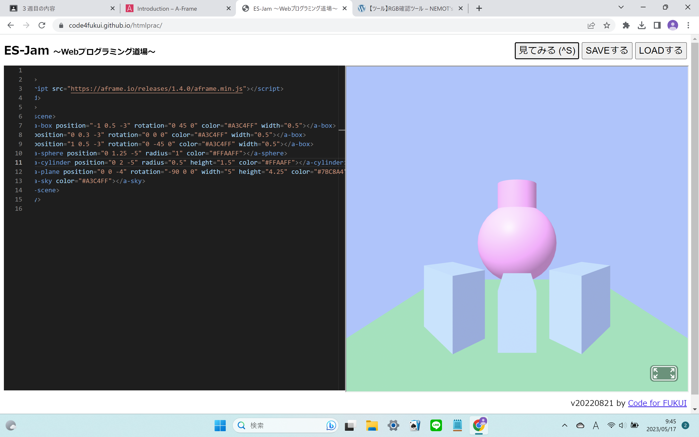
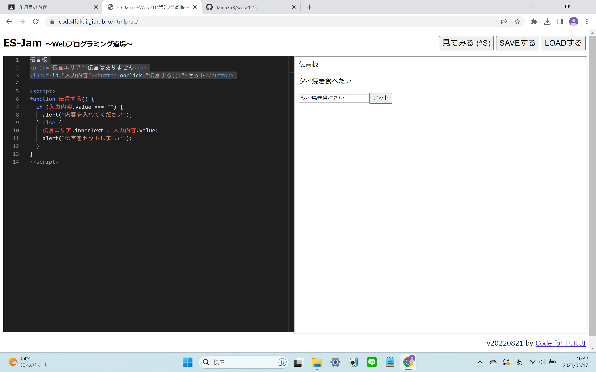

第3週目
3-1 JavaScript体験：VR空間を作る

自作した３次元空間
1.内容
WebVRプログラム体験では、「Webプログラミング道場]を使用した。
「A-Frame」からテンプレートをコピーして図形をプログラミング道場で展開した。
プログラムの内容は、色、位置、方向大きさなどが書かれていた。
コピーペーストしたり書き換えたりすることで様々な図形を作った。
2.感想
色を変えるときに色をRGB確認ツールを使用してカラーコードを使ったとき、赤と緑を混ぜたときに黄色になるのが不思議で面白かった。
図形を生成するときxyzの座標で設定したのだが、ほかの図形と組み合わせるときに合わせたい図形のどれかの座標に注目することで、うまく図形同士を組み合わせることができることがわかった。
3-2 JavaScript体験：伝言プログラムを作る

伝言板
1.内容
伝言プログラムを作る際にも「Webプログラミング道場」を使用した。
まず最初に、題名、伝言内容、伝言ボックスを作成した。
次に伝言をセットしたら、セットしたことを確認する通知が出るように設定した。
その後に、伝言がセットした場合「伝言をセットしました」と出るように、何も入力されていない場合「内容を入れてください」をと出るようにした。
2.感想
詳しい意味は分からなかったが、文章の周りには" “がついていたり、プログラムを囲んでいるのが＜～～～＞だとその後に出てくるのは＜/～～～＞になっているなどの一定の法則が見つかった。
また、全角半角でプログラムが成り立たないなどが起きたときに、見直しして直すのがとても難しかった。
3-3 JavaScriptプログラムの３次元空間の体験
1.内容
VRゴーグルをつけてのプログラム体験では、ます目状の空間の中で球、立方体、円柱が存在していた。
白い球を発射することができて、それぞれの図形には当たり判定があった。
また、瞬間移動することもできた。
2.感想
白い球が、空間内を飛び回っているのを見るのがやや面白かった。
また、ちゃんと発射された白い球は時間経過で速度が落ちたり、球同士がぶつかったとき、お互いスピードが出るなど現実と似たようになっていて凄いと思った。